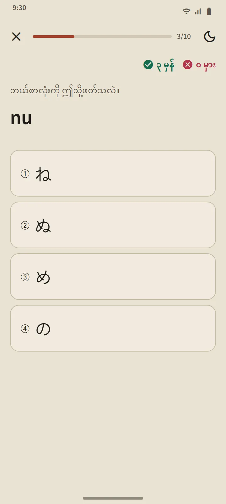

သင်ခန်းစာစာရင်းအဖြစ်လည်း အလုပ်လုပ်သော ဇယား
ဟိရဂနာနှင့် ကတာကနာ စာမျက်နှာများကို ပင်မမျက်နှာပြင်၏ “ဂျပန်စာ အခြေခံ” ပိုင်းမှ ဖွင့်သည်။ အပေါ်ဆုံးရှိ အနှစ်ချုပ်ကတ်က သင်သိသော စာလုံးများကို ရေတွက်သည်။ အောက်ရှိ ဇယားကို အုပ်စုသုံးခုခွဲထားသည်- အခြေခံ (စာလုံး 46 လုံး)၊ အမှတ်အသားပါ (dakuten နှင့် handakuten) နှင့် ပေါင်းစပ် (きゃ၊ しゅ၊ ちょ စသည်)။ အကွက်ပြည့်နေလျှင် မှတ်မိပြီ ကို ဆိုလိုပြီး မျဉ်းပိုင်းအကွက်ဆိုလျှင် လုပ်ဆောင်နေဆဲ ဖြစ်သည်။

အတန်းတစ်ခုလျှင် သင်ခန်းစာတစ်ခု
ဇယားအတန်းတစ်ခုစီသည် သင်ခန်းစာတစ်ခုဖြစ်သည်- အသံကြားရန် နှိပ်နိုင်သော စာလုံးအကွက်များ၊ ရိုမာဂျိ၊ မှတ်မိကြောင်းအမှတ်အသား၊ စာလုံးတိုင်း၏ ရေးနည်းအစီအစဉ်နှင့် “သင် ဖတ်နိုင်သော စကားလုံးများ”- ထိုအတန်းအထိ သင်ယူပြီးသော စာလုံးများဖြင့်သာ ဖွဲ့ထားသည့် အဘိဓာန်ပါ စကားလုံးအစစ်များ ဖြစ်ပြီး ရိုမာဂျိကို ခလုတ်နောက်တွင် ဝှက်ထားသောကြောင့် အရင်ကိုယ်တိုင် ဖတ်ကြည့်နိုင်သည်။ “ဤအတန်းကို စစ်ဆေးရန်” ခလုတ်က သင်ခန်းစာကို ပိတ်ပေးသည်။

ဖတ်နည်း စည်းမျဉ်းများ
ဇယားတစ်ခုစီ၏ နောက်ဆုံးအုပ်စုက အစပြုသူများ မကြာခဏ ချော်လဲတတ်သော စည်းမျဉ်းများကို ရှင်းပြသည်- ဟိရဂနာတွင် သေးငယ်သော っ နှင့် ရှည်သော သရများ၊ ကတာကနာတွင် ရှည်ရန်အမှတ်အသား ー၊ သေးငယ်သော ッ နှင့် နိုင်ငံခြားမှ ချေးယူသော စကားလုံး ပေါင်းစပ်ပုံများ (ファ၊ ティ၊ ウィ)။ စည်းမျဉ်းတိုင်းတွင် သင်ဖတ်နိုင်သော ဥပမာ စကားလုံးများ ပါသည်။
မေးခွန်း ဆယ်ခုပါ စစ်ဆေးမှုများ၊ ပြန်စီစဉ်ခြင်း မရှိ
ကာနာ မေးခွန်းတွင် မေးခွန်းအမျိုးအစား သုံးမျိုး ရှိသည်- စာလုံးမှ ရိုမာဂျိ၊ ရိုမာဂျိမှ စာလုံး၊ အသံမှ စာလုံး။ စာလုံးတစ်လုံးကို ဆက်တိုက် သုံးကြိမ်မှန်ဖြေလျှင် မှတ်မိပြီ ဖြစ်ပြီး မှားလျှင် လေ့လာဆဲသို့ ပြန်ကျသည်။ စကားလုံးများနှင့် ခန်းဂျီးနှင့်မတူဘဲ စာလုံးများကို ပြန်စီစဉ်ခြင်း မလုပ်ပါ- အားလုံး ဖတ်တတ်ပြီဆိုလျှင် ဇယားပြီးစီးသည်။ မေးခွန်းအကျဉ်းချုပ်တွင် သင့်ရမှတ်၊ အသစ်သိလာသော စာလုံးများနှင့် မှားခဲ့သော စာလုံးများကို ပြသည်။

မည်သည့်နေရာမှ စမည်နည်း
အက်ပ်ကို ပထမဆုံး ဖွင့်သောအခါ အစမှ စမည်လား၊ ဟိရဂနာ ဖတ်တတ်ပြီလားဟု မေးပါသည်။ သင့်အဖြေက ပင်မ စာမျက်နှာတွင် အကြံပြုချက် တစ်ခုကို သတ်မှတ်ပါသည်- အစမှ စမည့်သူအတွက် "ဟီရဂါနာဖြင့် စတင်ပါ"၊ ကျန်သူများအတွက် ပထမ စကားလုံး 20 လုံး။ ပြီးအောင် လုပ်ရမည့် စာရင်း မရှိပါ- ထိုကတ်တည်းက လုပ်ဆောင်ချက်အားလုံး၏ သင်ခန်းစာတိုသို့ ချိတ်ပေးပြီး အချိန်မရွေး ပိတ်နိုင်ပါသည်။